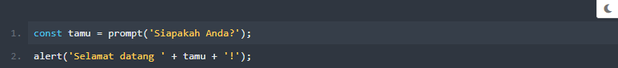
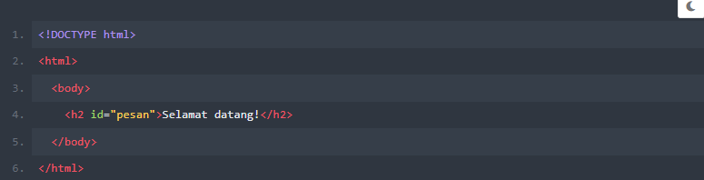
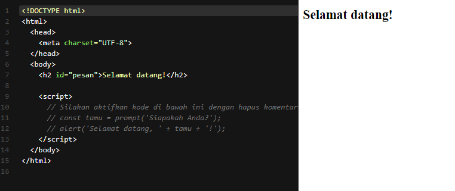
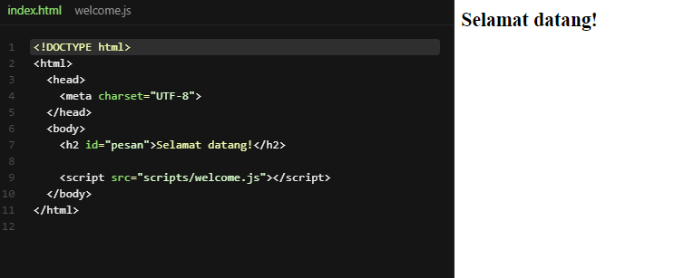
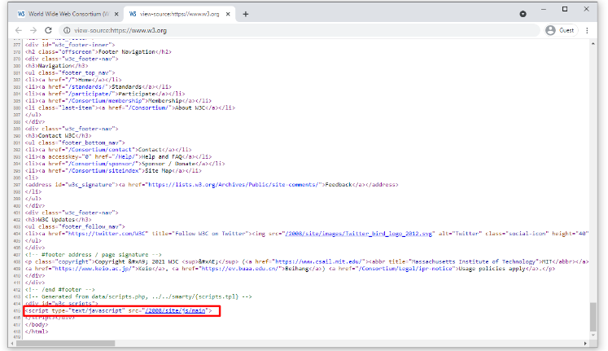
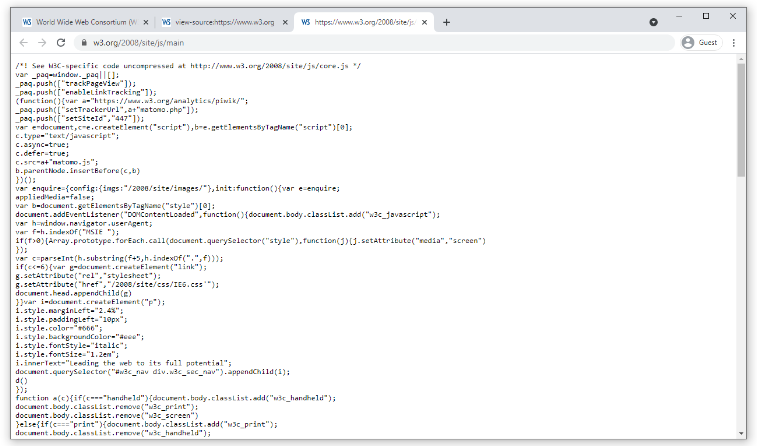
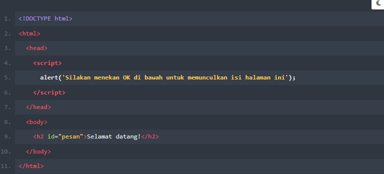

Menjalankan Website di JavaScript
Ketika membuat berkas HTML, tentu kita sudah tidak asing dengan
tag html, bukan? Nah, jika kita sudah familier dengan gaya
penulisan tag dalam sebuah berkas html, menambahkan kode JavaScript ke
dalam berkas HTML akan lebih mudah. Mengapa demikian? Karena kita
hanya perlu menggunakan tag script sebagai pembuka dan
tag /script sebagai penutup.
Ada dua cara untuk memasukkan kode JavaScript ke dalam berkas HTML kita, yakni secara internal dan external. Hal ini mirip dengan cara menyematkan berkas CSS ke dokumen HTML.
Andaikan kita ingin meminta input dari user pada sebuah box yang muncul. Input tersebut berisi nama dari user dan akan kita munculkan kembali nama dari user tersebut pada sebuah box. Berikut adalah bentuknya dalam kode JavaScript. 
Lalu kita siapkan juga berkas HTML bernama index.html dan strukturnya seperti di bawah ini : 
Nah, dari kedua kode program di atas, selanjutnya kita mempelajari cara memasukkan kode JavaScript ke dalam berkas HTML. Perhatikan pembahasan di bawah ini.
Internal JavaScript
Pertama, kita akan membahas cara menulis sintaks untuk memasukkan
kode JavaScript secara internal terlebih dahulu. Caranya cukup mudah
layaknya menulis CSS secara internal pada berkas HTML. Cukup
tuliskan kode JavaScript kita diantara tag pembuka dan penutup
(script dan /script).

External JavaScript
Berikutnya kita akan membahas bagaimana memasukkan kode JavaScript
ke dalam berkas HTML secara eksternal. Sama seperti memasukkan CSS
secara eksternal pada berkas HTML, kita perlu menulis lokasi berkas
berekstensi .js (dot js) pada atribut src di dalam
tag script alias tag pembuka.
Sebagai contoh, kita akan memisahkan kode JavaScript sebelumnya pada berkas terpisah yang bernama welcome.js. Dengan demikian, untuk memasukkan welcome.js ke dalam berkas index.html dapat dituliskan seperti berikut 
Pada tahap ini, pasti kita akan bertanya-tanya, "Kenappa tidak menggunakan JavaScript internal saja? Padahal kan sama saja dan cara eksternal terkesan lebih kompleks!"
Jawabannya sama dengan ketika kita ingin mengimplementasukan CSS secara internal dan eksternal. Kita menggunakan implementasi internal jika baris atau kompleksitas kode JavaScript sedikut atau rendah.
Namun perlahan kita akan dibuat pusing jika jumlah kode JavaScript kita banyak serta memiliki kompleksitas yang tinggi. Salah satu kelebihan implementasi JavaScript secara eksternal adalah memudahkan kita untuk memperbaiki laman web ketika terdapat bugs atau error dan menambahkan konten ketika diperlukan. Kita pun dapat menggunakan berkas JavaScript pada multiple dokumen HTML sehingga kita perlu menduplikasi kode. Tentu, hal ini sama seperti berkas CSS.
Contohnya pada halaman utama W3C.
Jika kita melihat berkas HTML-nya, terdapat sebuah elemen
script yang merujuk ke sebuah berkas JavaScript
eksternal. 
Jika kita telah kembali, di dalamnya terdapat kode JavaScript yang berisi perintah untuk memanipilasi struktur HTML mereka. Oleh karena itu, sebaiknya kita menggunakan cara JavaScript eksternal supaya dapat digunakan berulang kali. 
Peletakkan Elemen Script Harus Tepat
Walaupun implementasi JavaScript secara internal maupun eksternal
terlihat mirip dengan CSS internal dan eksternal, tetapi terdapat
perbedaan mendasar. Perbedaanya adalah kode CSS diletakkan dalam
elemen style yang berada di dalam elemn
head, sedangkan kode JavaScript diletakkan dalam elemen
script yang terdapat di bagian akhir elemen
body. Mengapa demikian?
Implementasi JavaScript ke dalam HTML akan berbeda jika dibandingkan
dengan implementasi CSS. Hal tersebut karena tag
style harus berada di dalam tag head yang
membuat elemen-elemeb pada dokumen HTML akan berganting pada konten
dalam CSS. Sehingga, langkah paling logis adalah mempersiapkan
konten CSS terlebih dahulu.
Berbeda dengan JavaScript, jika website kita tidak memerlukan
JavaScript unutk menampilkan halaman web, maka sebaliknya tag
script diletakkan sebelum bagian akhir dari sebuah
berkas HTML. Karena jika meletakkannya di awal, semua konten HTML
tidak akan dijalankan sebelum kode JavaScript yang berada pada tag
script selesai dijalankan. Ambil contoh isi berkas HTML
berikut:

Jika diperhatikan kembali pada tampilan di atas, kita haris menekan tombol "OK" terlebih dahulu supaya dapat menampilkan konten HTML. Hal ini dikarenakan elemen script dijalankan terlbih dahulu sehingga dokumen HTML belum di-render secara menyeluruh.
Anda harus benar-benar mempertimbangkan posisi peletakan tag
script pada berkas HTML-nya. Jika tidak hati-hati, maka
bisa saja tampilan halaman web menjadi tertunda dan dapat membuat
pengalaman yang tidak mengenakkan bagi user yang sedang mengunjungi
website kita.
Apakah ini berarti tag script harus selalu diletakkan
di bagian akhir berkas HTML? Tidak juga. Jika tampilan halaman web
Anda berganting terhadap kode JavaScript, sebaiknya diletakkan di
bagian yang sesuai.